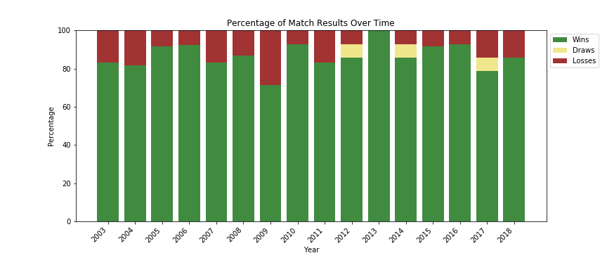

All Blacks Match Results Over Time
2003-2018: Aggregated
This is the total record of match outcomes for all games played between 2003 and 2018.
Of the 205 matches played, the New Zealand All Blacks won 178 matches and lost 24. In the 15 year span, the All Blacks only had 3 match draws.
This impressive record is one of the many reasons the All Blacks can be considered one of the most dominate sports teams in the world.
2003-2018: Year-by-Year

A year-by-year comparison shows the consistency of the All Blacks over time. There are only one or two losses each year with the exception of 2009,
when the All Blacks lost 4 of their 14 matches, resulting in the lowest win percentage (71%) of the data set. However, the team also boasts an undefeated season in 2013,
for a 100% win percentage.